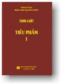
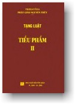

| |
|
 |
Tạng Luật
Vinaya Pitaka
Tiểu Phẩm
Cullavagga
Tỳ khưu Indacanda
Nguyệt Thiên dịch
|
 |
|
Lưu ý:
Ðọc với phông chữ VU Times
(Viet-Pali Unicode) |
| |
MỤC LỤC |
|
[01a] |
CULLAVAGGA I (TIỂU PHẨM 1)
I. CHƯƠNG HÀNH SỰ (KAMMAKKHANDHAKAṂ):
1. Hành sự khiển trách (Tajjanīyakammaṃ):
[1] Câu chuyện về các tỳ khưu nhóm Paṇḍuka và Lohitaka
[3] Thực thi hành sự khiển trách
[4] Hành sự khiển trách không đúng Pháp, không đúng Luật
[16] Hành sự khiển trách đúng Pháp, đúng Luật
[28] Thực thi hành sự khiển trách nếu muốn
[34] Mười tám phận sự của vị tỳ khưu thực thi hành sự khiển trách
[36] Hành sự khiển trách không nên thu hồi
[39] Hành sự khiển trách nên được thu hồi
[42] Thu hồi hành sự khiển trách
2. Hành sự chỉ dạy (Niyassakammaṃ):
[43] Câu chuyện về tỳ khưu Seyyasaka
[44] Thực thi hành sự chỉ dạy
[45] Hành sự chỉ dạy không đúng Pháp, không đúng Luật
[57] Hành sự chỉ dạy đúng Pháp, đúng Luật
[69] Thực thi hành sự chỉ dạy nếu muốn
[75] Mười tám phận sự của vị tỳ khưu thực thi hành sự chỉ dạy
[77] Hành sự chỉ dạy không nên thu hồi
[80] Hành sự chỉ dạy nên được thu hồi
[83] Thu hồi hành sự chỉ dạy
3. Hành sự xua đuổi (Pabbājanīyakammaṃ):
[84] Câu chuyện về các tỳ khưu Assaji và Punabbasuka
[87] Thực thi hành sự xua đuổi
[89] Hành sự xua đuổi không đúng Pháp, không đúng Luật
[93] Hành sự xua đuổi đúng Pháp, đúng Luật
[105] Thực thi hành sự xua đuổi nếu muốn
[119] Mười tám phận sự của vị tỳ khưu thực thi hành sự xua đuổi
[122] Hành sự xua đuổi không nên thu hồi
[125] Hành sự xua đuổi nên được thu hồi
[128] Thu hồi hành sự xua đuổi |
|
[01b] |
4. Hành sự hòa giải (Paṭisāraṇīyakammaṃ): [129] Câu chuyện về
tỳ khưu Sudhamma
[134] Thực thi hành sự hòa giải
[135] Hành sự hòa giải không đúng Pháp, không đúng Luật
[147] Hành sự hòa giải đúng Pháp, đúng Luật
[159] Thực thi hành sự hòa giải nếu muốn
[163] Mười tám phận sự của vị tỳ khưu thực thi hành sự hòa giải
[164] Cách thức yêu cầu thứ lỗi của vị tỳ khưu Sudhamma
[167] Hành sự hòa giải không nên thu hồi
[170] Hành sự hòa giải nên được thu hồi
[173] Thu hồi hành sự hòa giải
5. Hành sự án treo trong việc không nhìn nhận tội
(Āpattiyā adassane ukkhepanīyakammaṃ):
[174] Câu chuyện về tỳ khưu Channa
[175] Thực thi hành sự án treo trong việc không nhìn nhận tội
[176] Hành sự án treo trong việc không nhìn nhận tội không đúng Pháp,
không đúng Luật
[188] Hành sự án treo trong việc không nhìn nhận tội đúng Pháp, đúng
Luật
[200] Thực thi hành sự án treo trong việc không nhìn nhận tội nếu muốn
[206] Bốn mươi ba phận sự của vị tỳ khưu thực thi hành sự án treo
trong việc không nhìn nhận tội
[208] Hành sự án treo trong việc không nhìn nhận tội không nên thu hồi
[216] Hành sự án treo trong việc không nhìn nhận tội nên được thu hồi
[224] Thu hồi hành sự án treo trong việc không nhìn nhận tội
6. Hành sự án treo trong việc không sửa chữa lỗi
(Āpattiyā appaṭikamme ukkhepanīyakammaṃ):
[225] Câu chuyện về tỳ khưu Channa
[226] Thực thi hành sự án treo trong việc không sửa chữa lỗi
[227] Hành sự án treo trong việc không sửa chữa lỗi không đúng Pháp,
không đúng Luật
[239] Hành sự án treo trong việc không sửa chữa lỗi tội đúng Pháp,
đúng Luật
[251] Thực thi hành sự án treo trong việc không sửa chữa lỗi nếu muốn
[257] Bốn mươi ba phận sự của vị tỳ khưu thực thi hành sự án treo
trong việc không sửa chữa lỗi
[259] Hành sự án treo trong việc không sửa chữa lỗi không nên thu hồi
[267] Hành sự án treo trong việc không sửa chữa lỗi nên được thu hồi
[275] Thu hồi hành sự án treo trong việc không sửa chữa lỗi
7. Hành sự án treo trong việc không từ bỏ tà kiến ác
(Pāpikāya diṭṭhiyā appaṭinissagge ukkhepanīyakammaṃ):
[276] Câu chuyện về tỳ khưu Ariṭṭha
[277] Giảng về sự tai hại của dục tình
[278] Thực thi hành sự án treo trong việc không chịu từ bỏ tà kiến ác
[279] Hành sự án treo trong việc không chịu từ bỏ tà kiến ác không
đúng Pháp, không đúng Luật
[291] Hành sự án treo trong việc không chịu từ bỏ tà kiến ác đúng
Pháp, đúng Luật
[303] Thực thi hành sự án treo trong việc không chịu từ bỏ tà kiến ác
nếu muốn
[309] Mười tám phận sự của vị tỳ khưu thực thi hành sự án treo trong
việc không chịu từ bỏ tà kiến ác
[312] Hành sự án treo trong việc không chịu từ bỏ tà kiến ác không nên
thu hồi
[315] Hành sự án treo trong việc không chịu từ bỏ tà kiến ác nên được
thu hồi
[318] Thu hồi hành sự án treo trong việc không chịu từ bỏ tà kiến ác
[319] Bài kệ tóm lược |
|
[02] |
II. CHƯƠNG PARIVĀSA (PARIVĀSAKKHANDHAKAṂ):
1. Phận sự của vị thực hành parivāsa (Parivāsikavattaṃ):
[320] Câu chuyện về vị thực hành parivāsa
[322] Chín mươi bốn phận sự của vị thực hành parivāsa
[331] Ba sự đứt đêm của vị thực hành parivāsa
[332] Sự ngưng hành phạt parivāsa, sự ngưng phận sự
[333] Sự thọ trì lại hành phạt parivāsa, sự thọ trì lại phận sự
2. Phận sự của vị xứng đáng (thực hành) trở lại từ đầu
(Mūlāya paṭikassanārahavattaṃ):
[334] Câu chuyện về các vị xứng đáng (thực hành) trở lại từ đầu
[336] Phận sự của vị xứng đáng (thực hành) trở lại từ đầu
3. Phận sự của vị xứng đáng hành phạt mānatta
(Mānattārahavattaṃ):
[344] Câu chuyện về các vị xứng đáng hành phạt mānatta
[345] Phận sự của vị xứng đáng hành phạt mānatta
4. Phận sự của vị thực hành mānatta (Mānattacārikavattaṃ):
[354] Câu chuyện về các vị thực hành mānatta
[356] Phận sự của vị thực hành mānatta
[365] Bốn sự đứt đêm của vị thực hành mānatta
[366] Sự ngưng hành phạt mānatta, sự ngưng phận sự
[367] Sự thọ trì lại hành phạt mānatta, sự thọ trì lại phận sự
5. Phận sự của vị xứng đáng sự giải tội (Abbhānārahavattaṃ):
[368] Câu chuyện về vị tỳ khưu xứng đáng sự giải tội
[370] Phận sự của vị xứng đáng sự giải tội
[376] Bài kệ tóm lược |
|
[03a] |
III. CHƯƠNG TÍCH LŨY TỘI (SAMUCCAYAKKHANDHAKAṂ): [377] Câu
chuyện về tỳ khưu Udāyi
[378] Việc cầu xin hành phạt mānatta của tội không có che giấu
[379] Việc ban cho hành phạt mānatta của tội không có che giấu
[381] Cầu xin sự giải tội
[382] Tuyên ngôn giải tội
[384] Hành phạt parivāsa của tội che dấu một ngày
[387] Hành phạt mānatta của tội che dấu một ngày
[389] Việc giải tội
[393] Hành phạt parivāsa của tội che dấu năm ngày
[395] Sự phạm thêm một tội không có che giấu
[396] Việc cầu xin sự (thực hành) trở lại từ đầu của tội không có che
dấu
[397] Việc ban cho sự (thực hành) trở lại từ đầu của tội không có che
dấu
[398] Lại phạm thêm một tội không có che giấu
[402] Việc ban cho hành phạt mānatta của ba tội
[404] Lại phạm thêm một tội không có che giấu
[409] Hoàn thành hành phạt mānatta, lại phạm thêm tội thứ năm
[414] Ban cho sự giải tội
[416] Việc cầu xin hành phạt parivāsa nửa tháng
[417] Việc ban cho hành phạt parivāsa nửa tháng
[421] Việc ban cho hành phạt parivāsa kết hợp
(samodhānaparivāsa), v.v... |
|
[03b] |
[440] Câu chuyện về vị tỳ khưu phạm nhiều tội
[444] Việc ban cho hành phạt parivāsa kết hợp với giá trị
(agghena samodhānaparivāsa) của tội che giấu dài ngày nhất
[446] Câu chuyện về vị tỳ khưu phạm hai tội che giấu hai tháng chỉ xin
hành phạt cho một tội
[447] Việc cầu xin hành phạt parivāsa hai tháng cho tội còn lại
[449] Giảng về các trường hợp thực hành parivāsa hai tháng
[456] Giảng về trường hợp phạm tội che giấu hai tháng mà chỉ cầu xin
hành phạt parivāsa một tháng
[466] Câu chuyện về vị tỳ khưu phạm nhiều tội
[467] Việc ban cho hành phạt parivāsa hoàn toàn trong sạch
(suddhantaparivāsa)
[471] Câu chuyện về vị tỳ khưu hoàn tục, v.v... Hành phạt parivāsa
không có hiệu quả
[480] Sự (thực hành) trở lại từ đầu, v.v... không có tác dụng đối với
vị hoàn tục, v.v...
[489] Giảng về hành phạt parivāsa kết hợp với tội trước đây
[508] Giảng về trường hợp vị phạm tội, hoàn tục, v.v... rồi lại tu lên
bậc trên
[529] Giảng về trường hợp vị đang thực hành parivāsa, hoàn tục,
v.v... rồi lại tu lên bậc trên
[555] Giảng về trường hợp hai vị phạm tội
[566] Không được trong sạch với các tội
[575] Được trong sạch với các tội
[584] Bài kệ tóm lược |
|
[04] |
IV. CHƯƠNG DÀN XẾP (SAMATHAKKHANDHAKAṂ): 1. Hành xử Luật với sự
hiện diện (Sammukhāvinayo):
[585] Câu chuyện về các tỳ khưu nhóm Lục Sư
[586] Trường hợp không đúng Pháp
[588] Trường hợp đúng Pháp
2. Hành xử Luật bằng sự ghi nhớ (Sativinayo):
[589] Câu chuyện về ngài Dabba Mallaputta
[592] Chỉ định vị phân bố sàng tọa và sắp xếp các bữa ăn
[594] Câu chuyện về các tỳ khưu nhóm Mettiya và Bhummajaka
[595] Câu chuyện gia chủ là người có bữa ăn ngon, chuyện tỳ khưu ni
Mettiyā
[597] Việc ban cho cách hành xử Luật bằng sự ghi nhớ
[599] Năm sự ban cho đúng Pháp của cách hành xử Luật bằng sự ghi nhớ
3. Hành xử Luật khi không điên cuồng (Amūḷhavinayo):
[600] Câu chuyện về tỳ khưu Gagga
[601] Việc ban cho cách hành xử Luật khi không điên cuồng
[602] Việc ban cho không đúng Pháp của cách hành xử Luật khi không
điên cuồng
[605] Việc ban cho đúng Pháp của cách hành xử Luật khi không điên
cuồng
4. Việc phán xử theo tội đã được thừa nhận (Paṭiññātakaraṇaṃ):
[608] Câu chuyện về các tỳ khưu nhóm Lục Sư
[609] Sự phán xử theo tội đã được thừa nhận không đúng Pháp
[610] Sự phán xử theo tội đã được thừa nhận đúng Pháp
5. Thuận theo số đông (Yebhuyyasikā):
[611] Chỉ định vị phân phát thẻ
[612] Sự phân phát thẻ không đúng Pháp
[613] Sự phân phát thẻ đúng Pháp
6. Theo tội của vị ấy (Tassapāpiyasikā):
[614] Câu chuyện về tỳ khưu Upavāḷa
[615] Năm sự thực thi đúng Pháp của hành sự theo tội của vị ấy
[616] Hành sự theo tội của vị ấy không đúng Pháp, không đúng Luật
[617] Hành sự theo tội của vị ấy đúng Pháp, đúng Luật
[618] Thực thi hành sự theo tội của vị ấy nếu muốn
[624] Phận sự của vị tỳ khưu thực thi hành sự theo tội của vị ấy
7. Cách dùng cỏ che lấp (Tiṇavatthārakaṃ):
[626] Giải quyết bằng cách dùng cỏ che lấp
[627] Sự sám hối (desanā) theo cách dùng cỏ che lấp
8. Sự tranh tụng:
[632] Câu chuyện về tỳ khưu Channa. Bốn loại tranh tụng
[633] Giảng về bốn loại tranh tụng
[637] Nguyên nhân của sự tranh tụng liên quan đến tranh cãi
[641] Nguyên nhân của sự tranh tụng liên quan đến khiển trách
[648] Nguyên nhân của sự tranh tụng liên quan đến tội
[649] Nguyên nhân của sự tranh tụng liên quan đến nhiệm vụ
[650] Sự tranh tụng có thể là tốt, có thể là xấu, có thể là không tốt
không xấu
[664] Giảng về sự liên quan
9. Chỉ định cách dàn xếp sự tranh tụng:
[672] Sự tranh tụng liên quan đến tranh cãi được lắng dịu bởi hai
cách dàn xếp
[675] Chỉ định vị tỳ khưu hội đủ mười điều kiện làm đại biểu
[681] Ba cách phân phát thẻ
[682] Sự tranh tụng liên quan đến khiển trách được lắng dịu bởi bốn
cách dàn xếp
[683] Hành xử Luật bằng sự ghi nhớ
[685] Hành xử Luật khi không điên cuồng
[687] Hành xử theo tội của vị ấy
[689] Sự tranh tụng liên quan đến tội được lắng dịu bởi ba cách dàn
xếp
[691] Hành xử bằng cách dùng cỏ che lấp
[694] Sự tranh tụng liên quan đến nhiệm vụ được lắng dịu bởi một cách
dàn xếp |
|
[05] |
CULLAVAGGA II (TIỂU PHẨM 2)
V. CHƯƠNG CÁC TIỂU SỰ (KHUDDAKAVATTHUKKHANDHAKAṂ):
1. Tụng phẩm thứ nhất và thứ nhì:
[1] Câu chuyện về các tỳ khưu nhóm Lục Sư: Trong khi tắm.
[12] Đeo hoa tai. Đeo xâu chuỗi
[13] Việc để tóc dài. Việc chải tóc. v.v...
[15] Việc nhìn nét mặt ở gương soi, v.v... Việc thoa dầu khuôn mặt,
v.v...
[19] Việc xem lễ hội. Việc ngâm nga Pháp theo âm điệu ca hát với sự
kéo dài-
[21] Thuyết giảng với giọng có âm điệu. Áo choàng có phủ lông ở phía
ngoài
[23] Việc thọ dụng xoài. v.v... Năm cách làm cho (trái cây) đúng phép
sa-môn.
[26] Chuyện tỳ khưu bị rắn cắn. Kinh Rắn Chúa
[28] Việc cắt bỏ dương vật
[29] Bình bát bằng gỗ đàn hương. Chuyện sáu vị giáo chủ
[31] Câu chuyện trưởng lão Piṇ ḍolabhāradvāja
[34] Giảng về bình bát. Vòng đế bình bát. Bảo quản và sử dụng bình bát
[55] Việc sử dụng cán dao. Việc may y. Giảng về tấm y mẫu
[70] Cho phép túi đựng thuốc, dây mang vai, túi mang dép
[72] Việc lược nước. Đồ lược nước hai lớp. Lều chống muỗi
[78] Chuyện Jīvaka Komārabhacca. Giảng về đường kinh hành và nhà tắm
hơi
[90] Giảng về người không nên được đảnh lễ
[91] Trong nhà tắm hơi
[94] Giếng nước. Hồ nước tắm. Hồ trữ nước
[103] Việc lìa xa tọa cụ. Ngủ ở giường có rãi hoa
[106] Thảm len. Gối kê được rắc dầu thơm. Giá đỡ bình bát
[109] Việc sinh hoạt chung chạ như ăn, uống, ngủ, v.v...
[110] Câu chuyện Vaḍḍha Licchavī liên quan đến ngài Dabba Mallaputta
[112] Việc úp ngược bình bát
[116] Việc mở lại bình bát
[120] Câu chuyện vương tử Bodhi. Việc trải tấm thảm bằng vải
2. Tụng phẩm thứ ba:
[126] Câu chuyện bà Visākhā mẹ của Migāra
[131] Chuyện liên quan đến ô dù
[135] Câu chuyện vị tỳ khưu mang cây gậy và sợi dây
[136] Đồng ý về (việc sử dụng) gậy. Đồng ý về (việc sử dụng) dây
[144] Câu chuyện vị tỳ khưu có tật nhai lại. Nhặt thức ăn bị rơi vãi
[146] Câu chuyện vị tỳ khưu có móng dài. Việc liên quan đến móng (tay
chân)
[149] Việc liên quan đến râu tóc
[157] Việc lấy ráy tai
[159] Việc tích trữ đồ vật làm bằng đồng
[160] Thuốc cao. Ngồi ôm đầu gối. Vải băng bó
[163] Việc không buộc dây thắt lưng. Các dây thắt lưng. Khóa thắt lưng
[166] Hột nút, cái nơ buộc
[169] Sử dụng y phục của kẻ tại gia. Túi quàng ở hai vai
[172] Việc nhai gỗ chà răng. Điều lợi ích
[176] Việc đốt đám lửa lớn. Việc tạo nên ngọn lửa nghịch chiều để ngăn
lửa
[178] Việc trèo lên cây
[180] Việc chuyển đổi lời dạy của đức Phật sang dạng có niêm luật
[181] Việc giải đoán điềm lành dữ . Kiến thức nhảm nhí. Việc hắt hơi
[187] Việc ăn tỏi
[189] Liên quan đến nhà vệ sinh
[195] Hành động xấu xa của các tỳ khưu nhóm Lục Sư
[196] Quy định về đồ vật bằng kim loại, bằng gỗ, và bằng gốm sứ
[197] Bài kệ tóm lược |
|
[06] |
VI. CHƯƠNG SÀNG TỌA (SENĀSANAKKHANDHAKAṂ): 1. Tụng phẩm thứ nhất:
[198] Ở thành Rājagaha. Câu chuyện nhà đại phú
[201] Sự dâng cúng trú xá (vihāra). Bài kệ về sự dâng cúng trú xá
[205] Chuyện liên quan đến trú xá: Cánh cửa, Khóa, Mái lợp, Cửa sổ
[208] Cho phép giường nằm. Các loại giường ghế
[218] Liên quan đến gối, nệm, v.v...
[222] Trang hoàng trú xá: Việc sơn màu trắng, đỏ, đen, v.v... Hình ảnh
gợi cảm
[227] Việc kiến thiết trú xá: Nền, Lan can để vịn, Màn che, Ba loại
phòng, v.v...
[235] Việc xây dựng: Hội trường, Nhà nước uống, Mái che chỗ nước uống,
v.v...
[237] Hàng rào của trú xá. Cổng rào của trú xá
[239] Nhà để đốt lửa. Hàng rào của tu viện. Cổng của tu viện. Năm loại
mái che
2. Tụng phẩm thứ nhì:
[241] Câu chuyện gia chủ Anāthapiṇ ḍika:
Nghe danh đức Phật
[246] Câu chuyện dạ xoa Sīvaka. Bài kệ của dạ xoa Sīvaka
[250] Thuyết Pháp theo thứ lớp. Pháp nhãn của Anāthapiṇḍika
[255] Thỉnh đức Phật an cư (mùa mưa) ở Sāvatthi. Việc xây dựng
Jetavana
[258] Việc xây dựng công trình mới
[260] Chuyện giành chỗ trú xá
[261] Chỗ ngồi tốt nhất. Nước uống tốt nhất. Vật thực tốt nhất
[262] Câu chuyện chim đa đa, khỉ, và voi
[263] Bài kệ về sự kính trọng
[264] Mười hạng không nên được đảnh lễ. Ba hạng nên được đảnh lễ
[267] Các chỗ ngồi cao và rộng đã được sắp xếp bởi gia chủ
[269] Dâng cúng Jetavana. Bài kệ về sự dâng cúng trú xá
[272] Sự bảo đứng dậy khi chưa ăn xong. Sự xâm chiếm chỗ nằm ngồi
[276] Câu chuyện về các tỳ khưu nhóm Mười Bảy Sư. Việc lôi ra khỏi trú
xá
[277] Chỉ định vị phân phối sàng tọa. Cách thức phân phối sàng tọa
3. Tụng phẩm thứ ba:
[283] Câu chuyện về tỳ khưu Upananda chiếm giữ hai chỗ trú ngụ
[284] Sự ngợi khen về Luật. Giảng về việc ngồi, ghế ngồi
[291] Xử lý các vật dụng không được phép dùng
[292] Sự phân tán sàng tọa thuộc về hội chúng, năm vật không thể phân
tán
[293] Câu chuyện về các tỳ khưu nhóm Assaji và Punabbasuka, năm vật
không thể phân chia
[295] Câu chuyện về các tỳ khưu ở Āḷavī. Giảng về việc cho phép công
trình mới
[309] Sử dụng đồ đạc của nơi này ở nơi khác. Việc di chuyển vật dụng
[312] Việc trao đổi vật dụng
[314] Vật chùi chân. Việc bước lên chỗ nằm ngồi với chân chưa rửa
[320] Cho phép ống nhổ. Bảo quản nền tường
[325] Các loại bữa ăn dâng đến hội chúng
[326] Chỉ định vị sắp xếp bữa ăn. Cách thức sắp xếp bữa ăn
[329] Chỉ định vị phân bố sàng tọa. Chỉ định vị giữ kho đồ đạc, v.v...
[331] Chỉ định vị phân chia vật linh tinh. Cách thức phân chia vật
linh tinh
[334] Chỉ định các công việc khác. Chỉ định vị quản trị các sa di
[336] Bài kệ tóm lược |
|
[07] |
VII. CHƯƠNG CHIA RẼ HỘI CHÚNG (SAṄGHABHEDAKKHANDHAKAṂ): 1. Tụng
phẩm thứ nhất:
[337] Câu chuyện Mahānāma và Anuruddha dòng Sākya, công việc gia
đình
[340] Câu chuyện Anuruddha dòng Sākya và đức vua Bhaddiya dòng Sākya
[341] Câu chuyện bảy vị xuất gia
[344] Câu chuyện bốn vị dòng Sākya. Câu chuyện về tỳ khưu Bhaddiya
[347] Bài kệ cảm hứng
[349] Câu chuyện Devadatta và hoàng tử Ajātasattu
[350] Câu chuyện thiên tử Kakudha và ngài Mahāmoggallāna
[352] Giảng về năm hạng đạo sư
[359] Devadatta được lợi lộc. Ví dụ về cây chuối, cây tre, cây sậy,
con lừa cái
2. Tụng phẩm thứ nhì:
[361] Devadatta xin cai quản hội chúng tỳ khưu
[362] Hành sự công bố về Devadatta
[366] Câu chuyện hoàng tử Ajātasattu. Sự ra sức giết chết cha
[368] Việc sai người giết bậc Đạo Sư của Devadatta. Sự hóa độ những
người ấy
[372] Việc làm Như Lai chảy máu của Devadatta. Giảng về năm hạng đạo
sư
[377] Việc thả voi Nāḷāgiri của Devadatta. Voi Nāḷāgiri được thuần
phục
[382] Devadatta mất lợi lộc. Devadatta yêu cầu năm sự việc
[387] Devadatta tuyên bố sẽ hành lễ Uposatha (Bố Tát) riêng
[388] Bài kệ cảm hứng
3. Tụng phẩm thứ ba:
[389] Tiến hành chia rẽ hội chúng
[391] Sāriputta và Moggallāna thu phục năm trăm tỳ khưu từ Devadatta
[394] Sự ứa ra máu nóng từ miệng của Devadatta
[396] Câu chuyện về các con long tượng
[398] Tám điều kiện để làm vị sứ giả
[401] Nghiệp quả của tám điều phi Pháp và ba điều phi Pháp của
Devadatta
[404] Câu hỏi của trưởng lão Upāli: Sự bất đồng trong hội chúng. Sự
chia rẽ hội chúng. Chỉ có tỳ khưu mới chia rẽ hội chúng
[405] Thế nào gọi là hội chúng bị chia rẽ?
[406] Thế nào gọi là hội chúng được hợp nhất?
[407] Nghiệp quả của kẻ chia rẽ hội chúng và của vị làm hợp nhất hội
chúng đã bị chia rẽ
[411] Thế nào là kẻ chia rẽ hội chúng phải gánh chịu sự bất hạnh?
[412] Thế nào là kẻ chia rẽ hội chúng không phải gánh chịu sự bất
hạnh?
[413] Bài kệ tóm lược |
|
[08] |
VIII. CHƯƠNG PHẬN SỰ (VATTAKKHANDHAKAṂ): 1. Phận sự của tỳ khưu
vãng lai (Āgantuka):
[414] Câu chuyện về các tỳ khưu vãng lai
[415] Phận sự của vị vãng lai
2. Phận sự của tỳ khưu thường trú (Āvāsika):
[416] Câu chuyện về các tỳ khưu thường trú
[417] Phận sự của vị thường trú
3. Phận sự của vị xuất hành (Gamika):
[418] Câu chuyện về các tỳ khưu xuất hành
[419] Phận sự của vị xuất hành
4. Phận sự tùy hỷ:
[420] Cho phép sự tùy hỷ ở chỗ thọ thực
[421] Các câu chuyện xảy ra ở chỗ thọ thực
5. Phận sự ở chỗ thọ thực:
[424] Câu chuyện về các tỳ khưu nhóm Lục Sư
[425] Phận sự khi đi đến chỗ thọ thực, lúc thọ thực, và khi đi về lại
tu viện
6. Phận sự của vị đi khất thực:
[426] Câu chuyện về vị tỳ khưu đi khất thực
[427] Phận sự của vị đi khất thực
7. Phận sự của vị ngụ ở rừng:
[428] Câu chuyện về vị tỳ khưu ở rừng
[429] Phận sự của vị ngụ ở rừng
8. Phận sự ở nơi cư ngụ:
[430] Câu chuyện về các tỳ khưu nhóm Lục Sư
[431] Phận sự ở nơi cư ngụ
9. Phận sự ở nhà tắm:
[432] Câu chuyện về các tỳ khưu nhóm Lục Sư
[433] Phận sự ở nhà tắm
10. Phận sự ở nhà vệ sinh:
[434] Câu chuyện về vị tỳ khưu dòng dõi bà-la-môn
[435] Vào nhà vệ sinh theo thứ tự đi đến
[436] Câu chuyện về các tỳ khưu nhóm Lục Sư
[437] Phận sự ở nhà vệ sinh
11. Phận sự đối với thầy tế độ:
[438] Câu chuyện về các vị đệ tử (saddhivihārika)
[439] Phận sự đối với thầy tế độ
12. Phận sự đối với đệ tử:
[440] Câu chuyện về các thầy tế độ
[441] Phận sự đối với vị đệ tử
13. Phận sự đối với thầy dạy học:
[442] Câu chuyện về các học trò (antevāsika)
[443] Phận sự đối với thầy dạy học
14. Phận sự đối với học trò:
[444] Câu chuyện về các thầy dạy học
[445] Phận sự đối với học trò
[446] Bài kệ tóm lược |
|
[09] |
IX. CHƯƠNG ĐÌNH CHỈ GIỚI BỔN PĀTIMOKKHA
(PĀTIMOKKHAṬṬHAPANAKKHANDHAKAṂ): 1. Tụng phẩm thứ nhất:
[447] Câu chuyện trưởng lão Ānanda thỉnh đức Thế Tôn tuyên đọc giới
bổn
[449] Tám pháp kỳ diệu phi thường trong biển cả
[457] Tám pháp kỳ diệu phi thường trong Pháp và Luật
[466] Sự đình chỉ giới bổn Pātimokkha của vị phạm tội
[467] Câu chuyện về các tỳ khưu nhóm Lục Sư
[468] Các tiêu đề của sự đình chỉ giới bổn Pātimokkha
[469] Giảng giải và phân tích các tiêu đề của sự đình chỉ giới bổn
Pātimokkha
[489] Giảng về sự đình chỉ giới bổn Pātimokkha đúng Pháp
2. Tụng phẩm thứ nhì:
[499] Các câu hỏi của Upāli: Áp dụng sự hành xử
[500] Nên quán xét bản thân bao nhiêu pháp trước khi khiển trách vị
khác?
[506] Sự ân hận của vị khiển trách không đúng Pháp
[507] Sự không ân hận của vị bị khiển trách không đúng Pháp
[508] Sự không ân hận của vị khiển trách đúng Pháp
[509] Sự ân hận của vị bị khiển trách đúng Pháp
[510] Nên tác ý nội tâm bao nhiêu pháp trước khi khiển trách vị khác?
[511] Vị tỳ khưu bị khiển trách nên an trú bao nhiêu pháp?
[512] Bài kệ tóm lược |
|
[10] |
X. CHƯƠNG TỲ KHƯU NI (BHIKKHUNĪKHANDHAKAṂ): 1. Tụng phẩm thứ
nhất:
[513] Câu chuyện bà Mahāpajāpati Gotamī cầu xin việc xuất gia
[515] Câu chuyện trưởng lão Ānanda cầu xin việc xuất gia cho phụ nữ
[516] Tám Trọng Pháp
[518] Giảng về sự tồn tại không lâu dài của Phạm hạnh
[519] Sự tu lên bậc trên của các tỳ khưu ni
[521] Câu chuyện bà Mahāpajāpati Gotamī cầu xin đặc ân
[523] Giảng về các đặc điểm để xác định Pháp và Luật
[524] Việc đọc tụng giới bổn Pātimokkha cho các tỳ khưu ni
[526] Sự sám hối tội. Sự ghi nhận tội. Sự thực thi hành sự cho các tỳ
khưu ni
[532] Câu chuyện về tỳ khưu ni đệ tử của trưởng lão ni Uppalavaṇṇā
2. Tụng phẩm thứ nhì:
[533] Câu chuyện về các tỳ khưu nhóm Lục Sư: Việc không cần đảnh lễ
[534] Câu chuyện về các tỳ khưu ni nhóm Lục Sư: Cho phép đình chỉ việc
giáo giới
[537] Giảng giải về sự đình chỉ việc giáo giới
[553] Các câu chuyện về tỳ khưu ni: Việc mang dây buộc thân loại dài
[556] Việc thoa dầu ở mặt, v.v... Việc mặc y toàn màu xanh đậm, v.v...
[559] Câu chuyện vị tỳ khưu ni lâm chung
[561] Câu chuyện người đàn bà ngoại tình và việc mang đi bào thai bằng
bình bát
[563] Việc nhìn chăm chú vào vật biểu tượng nam tánh
[564] Sự san sẻ vật thực
[571] Sự cho phép về các vật dụng dành riêng cho người nữ: y nội trợ,
v.v...
3. Tụng phẩm thứ ba:
[573] Hai mươi bốn pháp chướng ngại
[574] Sự cho phép người nữ được tu lên bậc trên ở hội chúng tỳ khưu ni
trước rồi ở hội chúng tỳ khưu sau.
[575] Chỉ định vị giảng giải: Chỉ định cho chính mình. Chỉ định cho
người khác
[578] Sự tu lên bậc trên ở hội chúng tỳ khưu ni
[579] Sự tu lên bậc trên ở hội chúng tỳ khưu
[581] Sự chỉ dạy
[582] Quy định chỗ ngồi
[584] Giảng về lễ Pavāraṇā (Tự Tứ) ở hai hội chúng
[590] Việc cấm tỳ khưu ni đình chỉ lễ Uposatha (Bố Tát), v.v...
của tỳ khưu
[591] Việc cho phép tỳ khưu đình chỉ lễ Uposatha, v.v... của tỳ
khưu ni
[592] Vịệc di chuyển bằng xe, v.v...
[595] Sự tu lên bậc trên thông qua người đại diện: Câu chuyện
Aḍḍhakāsī
[597] Tỳ khưu ni không nên cư ngụ ở trong rừng. Chỗ ở của tỳ khưu ni
[599] Chỉ định vị cộng sự với tỳ khưu ni có con trai
[600] Chỉ định vị cộng sự với tỳ khưu ni là vị đang thực hành
mānatta
[601] Không có việc từ bỏ học giới đối với tỳ khưu ni
[602] Cô ni sinh hoạt trong khu vực của ngoại đạo
[604] Không được ngồi thế kiết già
[607] Bột phấn thoa. Việc tắm, v.v...
[613] Bài kệ tóm lược |
|
[11] |
XI. CHƯƠNG LIÊN QUAN NĂM TRĂM VỊ (PĀÑCASATIKAKKHANDHAKAṂ):
[614] Nguyên nhân của cuộc kết tập lần thứ nhất: Câu chuyện trưởng lão
Mahākassapa và Subhadda
[615] Chỉ định năm trăm tỳ khưu
[616] Việc sửa chữa những nơi bị hư hỏng
[617] Quả vị A-la-hán của trưởng lão Ānanda
[618] Kết tập về điều học Pārājika: Sự trả lời về Luật của
trưởng lão Upāli
[619] Kết tập về kinh Brahmajāla (Phạm Võng), v.v... Sự trả lời
về Pháp của trưởng lão Ānanda
[620] Giảng về các điều học nhỏ nhặt và ít quan trọng
[621] Sự quyết định không thêm vào và không bỏ bớt
[622] Giảng về các tội dukkaṭa (tác ác) của đại đức Ānanda
[623] Câu chuyện trưởng lão Purāṇa
[624] Việc áp đặt hình phạt Phạm Thiên (Brahmadaṇḍa) cho tỳ khưu
Channa
[625] Câu chuyện vua Udena: Sự dâng cúng năm trăm thượng y
[627] Trưởng lão Channa thể nhập trạng thái A-la-hán
[629] Bài kệ tóm lược |
|
[12] |
XII. CHƯƠNG LIÊN QUAN BẢY TRĂM VỊ (SATTASATIKKHANDHAKAṂ): 1. Tụng
phẩm thứ nhất:
[630] Câu chuyện về các tỳ khưu dòng dõi Vajji: Việc truyền bá mười
sự việc
[631] Câu chuyện về các tỳ khưu dòng dõi Vajji và trưởng lão Yasa
[634] Bốn vật làm ô nhiễm đối với mặt trăng và mặt trời. Bốn điều làm
ô nhiễm đối với sa-môn và bà-la-môn
[637] Câu chuyện thôn trưởng Maṇicūḷaka
[638] Câu chuyện Upananda dòng dõi Sākya
[639] Trở lại câu chuyện về các tỳ khưu dòng dõi Vajji và trưởng lão
Yasa
[640] Câu chuyện về trưởng lão Sambhūta Sāṇavāsī. Câu chuyện về các tỳ
khưu ở Pāvā
[641] Câu chuyện về trưởng lão Revata
[642] Sự hỏi và trả lời mười sự việc
2. Tụng phẩm thứ nhì:
[643] Các tỳ khưu Vajji chuẩn bị vật dụng để mua chuộc trưởng lão
Revata
[644] Tư tưởng suy tầm của trưởng lão Sāḷha
[645] Câu chuyện về trưởng lão Uttara, thị giả của trưởng lão Revata
[646] Việc mong muốn dàn xếp sự tranh tụng của hội chúng
[647] Câu chuyện về trưởng lão của hội chúng: Sabbakāmī
[648] Câu hỏi của trưởng lão Sambhūta Sāṇavāsī
[649] Giải quyết sự tranh tụng bằng đại biểu: Chỉ định các tỳ khưu
[650] Câu chuyện về trưởng lão Ajita, chọn địa điểm kết tập
[651] Giải quyết mười sự việc
[663] Cuộc kết tập về Luật liên quan đến bảy trăm vị
[664] Bài kệ tóm lược |
-ooOoo-
PHẦN GIỚI THIỆU
*****
Cullavagga (Tiểu Phẩm) là phần thứ nhì của bộ
Khandhaka (Hợp Phần) thuộc Vinayapiṭaka (Tạng Luật). Cũng
tương tợ như Mahāvagga (Đại Phẩm), Cullavagga (Tiểu Phẩm)
gồm các vấn đề có liên quan đã được sắp xếp thành từng chương, cụ thể gồm
có 12 chương:
1. Chương đầu là chương Hành Sự đề cập đến bảy loại hành sự nhằm
mục đích nhắc nhở và cảnh tỉnh vị tỳ khưu có những hành vi không đúng với
Pháp không đúng với Luật hầu tạo điều kiện cho vị ấy có cơ hội phục thiện
và sửa đổi. Bảy hành sự ấy là hành sự khiển trách, hành sự chỉ dạy, hành
sự xua đuổi, hành sự hòa giải, và 3 loại hành sự án treo trong việc không
nhìn nhận tội, trong việc không sửa chữa lỗi, và trong việc không từ bỏ tà
kiến ác.
2. Chương 2 giảng giải về cách thức phục hồi cho vị tỳ khưu phạm
tội saṅghādisesa (tăng tàng) từ lúc khởi đầu cho đến khi kết thúc
trải qua các giai đoạn parivāsa, mānatta, mūlāya
paṭikassanaṃ nếu vi phạm lại tội ấy hoặc tội tương tợ trong thời gian
thực thi hành phạt, và cuối cùng là phần giải tội abbhāna để phục
hồi phẩm vị trước đây cho vị tỳ khưu phạm tội.
3. Chương 3 giảng giải về các trường hợp đặc biệt của vị tỳ khưu
trong khi đang thực thi các hành phạt để thoát khỏi tội saṅghādisesa
lại tiếp tục vi phạm tội ấy nữa hoặc các tội tương tợ cùng nhóm.
4. Chương 4 giảng giải về bảy cách dàn xếp là cách hành xử Luật
với sự hiện diện, hành xử Luật bằng sự ghi nhớ, hành xử Luật khi không
điên cuồng, việc phán xử theo tội đã được thừa nhận, thuận theo số đông,
theo tội của vị ấy, cách dùng cỏ che lấp đối với bốn loại tranh tụng là sự
tranh tụng là liên quan đến tranh cãi, sự tranh tụng liên quan đến khiển
trách, sự tranh tụng liên quan đến tội, và sự tranh tụng liên quan đến
nhiệm vụ.
5. Chương 5 là chương các Tiểu Sự đề cập đến nhiều vấn đề có
liên quan đến sự sinh hoạt hàng ngày của vị tỳ khưu về nhiều khía cạnh
khác nhau như cách phục sức, thuyết Pháp, các vật dụng, v.v...
6. Chương 6 là chương Sàng Tọa thuật lại việc dâng cúng 60 trú
xá đầu tiên của một nhà đại phú ở thành Rājagaha cho đến sự cúng dường một
tu viện hoàn chỉnh của ông Anāthapiṇḍika (Cấp Cô Độc) và các vấn đề liên
quan như việc xây dựng, cách thức sử dụng, và các sự phân công trong việc
quản lý tu viện.
7. Chương thứ 7 là chương Chia Rẽ Hội Chúng bắt đầu với câu
chuyện dài giới thiệu sự sinh hoạt trong một gia đình tiêu biểu của dòng
họ Sākya (Thích Ca) tiếp đến sự xuất gia của sáu thanh niên thuộc dòng họ
này trong đó có Devadatta về sau là người khởi xướng và tiến hành việc
chia rẽ hội chúng. Chương này được kết thúc với những câu hỏi của trưởng
lão Upāli để xác định những điểm khác biệt giữa sự bất đồng trong hội
chúng là việc thường xảy ra trong tập thể và sự chia rẽ hội chúng là việc
có tính chất nghiêm trọng. Nghiệp quả xấu dành cho kẻ chia rẽ hội chúng và
phước báu của vị làm hợp nhất hội chúng đã bị chia rẽ cũng được đề cập đến
ở chương này.
8. Chương thứ 8 giảng giải về 14 phận sự trong đời sống xuất
gia. Cuộc sống của vị tỳ khưu được mô tả đầy đủ trong chương này bắt đầu
với phận sự của vị tỳ khưu vãng lai, thường trú, hoặc chuẩn bị ra đi, luôn
cả phận sự của vị tỳ khưu đối với chỗ trú ngụ ở trong rừng hoặc ở trong tu
viện. Các phận sự thường nhật như đi khất thực, phận sự ở nhà ăn, tùy hỷ
phước báu của thí chủ, việc sử dụng nhà tắm, nhà vệ sinh đều được mô tả
chi tiết. Ngoài ra còn quy định các phận sự tương tác giữa thầy tế độ và
thầy dạy học đối với các đệ tử hoặc học trò có liên hệ nữa. Cuộc sống
chung có được tốt đẹp hay không chính là do sự nhận thức và thực hành các
phận sự này của hàng xuất gia điển hình là các vị tỳ khưu.
9. Chương thứ 9 là chương Đình Chỉ Giới Bổn Pātimokkha,
trình bày nguyên do việc đức Thế Tôn đã thuyết giảng về tám pháp kỳ diệu
phi thường trong biển cả để so sánh với tính chất đặc biệt của Pháp và
Luật mà Ngài đã tuyên thuyết, đồng thời có liên quan đến việc giao phó
trách nhiệm đọc tụng giới bổn Pātimokkha cho các tỳ khưu kể từ thời
điểm ấy trở đi. Phương thức đình chỉ giới bổn Pātimokkha nhằm để
bảo vệ sự trong sạch của hội chúng bằng cách loại ra những tỳ khưu phạm
tội nhưng vẫn che giấu hoặc tỏ ra không hay biết. Đặc biệt chương này còn
đề cập đến nhiều chi tiết tế nhị trong việc khiển trách tội của vị tỳ khưu
nguyên cáo và thái độ thích hợp của vị tỳ khưu bị cáo hầu giữ được hòa khí
của hai bên.
10. Chương thứ 10 đề cập việc xuất gia của tỳ khưu ni với đầy đủ
chi tiết bắt đầu với việc cầu xin xuất gia của bà Mahāpajāpati Gotamī sau
đó đã được tu lên bậc trên do sự chấp thuận tám Trọng Pháp, kế đến là năm
trăm công nương dòng Sākya được xuất gia với hội chúng tỳ khưu, tiếp nữa
là tiến trình tu lên bậc trên với cả hai hội chúng: với hội chúng tỳ khưu
ni trước rồi với hội chúng tỳ khưu sau. Trong trường hợp đặc biệt, hành sự
tu lên bậc trên ở hội chúng tỳ khưu có thể được tiến hành với sự hiện diện
của vị tỳ khưu ni là người đại diện. Ngoài ra, một số vấn đề nảy sinh có
tính cách cá biệt của phái nữ cũng được kết tập ở chương này. Nghiên cứu
kỹ lưỡng về chương này có thể nắm được nét chung về sự sinh hoạt của tỳ
khưu ni vào thời bấy giờ.
11. Chương thứ 11 nói về cuộc kết tập Tam Tạng lần thứ nhất ở Ấn
Độ. Ngoài những sử liệu liên quan đến công việc kết tập lời dạy của đức
Phật gồm có phần duyên khởi, việc chuẩn bị và tiến hành, chương này còn đề
cập đến lời tuyên bố của đại đức Purāṇa về việc vị ấy chỉ ghi nhận những
lời dạy do chính bản thân đã được nghe trực tiếp từ kim khẩu của đức Thế
Tôn, về việc các vị trưởng lão quyết định không thêm vào và không bỏ bớt
bất cứ điều học nào, sự tuân thủ của đại đức Ānanda đối với các bậc trưởng
lão, và cách thức áp dụng hình phạt Brahma (Phạm đàn).
12. Chương thứ 12 nói về lần kết tập Tam Tạng lần thứ nhì ở Ấn
Độ với phần duyên khởi ở Vesālī vào khoảng 100 năm sau khi đức Phật Vô Dư
Niết Bàn. Các chi tiết về tiến trình vận động của cả hai phe trong cuộc
tranh tụng này giúp cho độc giả biết được vài nét khái quát trong đời sống
sinh hoạt tinh thần vào thời bấy giờ. Đây là sự kiện chia phe nhóm thứ hai
sau lần ở Kosambī được ghi chép lại, tiếc rằng sử liệu này dừng ở thời
điểm kết thúc của lần kết tập này mà không tiết lộ thêm chi tiết nào về sự
phân chia tông phái về sau này.
*
Chúng tôi khởi đầu việc nghiên cứu phần Pāli
văn của Tam Tạng với tập Cullavagga (Tiểu Phẩm) do nhu cầu tìm tòi
tư liệu dẫn chứng về sự hình thành tu viện thời đức Phật. Chúng tôi chợt
nảy ra ý kiến ghi lại bằng tiếng Việt ngõ hầu giúp cho độc giả người Việt
có cơ hội biết thêm về những lời dạy cao quý của đức Phật trong những
trang sách còn được khép lại. Việc này đã đem lại cho chúng tôi niềm hoan
hỷ khi nghĩ rằng việc học tập của bản thân có thể đem lại phần nào lợi ích
cho người khác. Phần lời Việt được hoàn tất trong thời gian khoảng gần hai
tháng. Thời gian đó quá ngắn đối với số lượng công việc quá lớn lao trong
lúc vừa phải đọc sách tham khảo, tra cứu từ điển, và thực hiện việc ghi
lại bằng máy vi tính. Lời văn tiếng Việt được chúng tôi sử dụng rất gần
với cấu trúc của câu văn Pāli nhằm làm nổi bật cấu trúc văn phạm
của loại ngôn ngữ này theo phong cách cổ điển đã được đa số các nhà học
giả phương Tây áp dụng. Điều này sẽ thuận tiện cho việc hiệu đính về sau
và có thể hữu ích cho các độc giả đang nghiên cứu lời dạy của Đức Phật dựa
vào văn bản gốc.
Do những vấn đề đã trình bày ở trên, chúng tôi mong mỏi sẽ nhận được
những lời chỉ dạy của các bậc cao minh và các sự khuyến khích góp ý của
quý độc giả. Tuy đã nỗ lực kiểm tra lại nhiều lần nhưng chúng tôi biết
rằng bản dịch này vẫn còn nhiều sai sót, xin quý độc giả đánh dấu cho
những điểm cần sửa chữa và tùy duyên chuyển đến chúng tôi qua địa chỉ
email:
dinda@u.washington.edu để chúng tôi dễ dàng trong việc
hiệu đính hầu đem lại lợi ích thiết thực chung cho tất cả. Xin thành tâm
cảm tạ.
Bản dịch của chúng tôi được thực hiện và trình bày theo văn bản Pāli
La tinh từ Compact Disk BUDSIR IV của trường đại học Mahidol ở thủ
đô Bangkok, Thái Lan. Phần mục lục chúng tôi thực hiện theo các chữ số
đánh dấu ở đầu mỗi vấn đề; trình bày theo cách này sẽ giúp quý vị tiết
kiệm được thời gian trong việc xác định vấn đề cần tham khảo.
Xin chân thành ghi nhận công đức của Thượng Toạ Tiến Sĩ Bửu Chánh về CD
Tam Tạng BUDSIR IV, Ven. Bodhinando (Canada), Đại Đức Hộ Phạm, Đại Đức
Giác Hạnh, và Đại Đức Tâm An về CD Tam Tạng Chattha Saṅgāyana và
các bản dịch Anh ngữ cũng như những sự động viên và ý kiến đóng góp trong
thời gian chúng tôi thực hiện bản dịch này.
Công đức này xin dâng đến Hòa Thượng trụ trì và chư Tăng chùa Sri
Jayawardhanaramaya, Colombo, Tích Lan đã bảo bọc và tạo điều kiện thuận
lợi cho chúng tôi trong công việc học tập và nghiên cứu Phật Pháp trong
thời gian qua.
Mong sao hết thảy chúng sanh đều được tiến hóa trong ánh hào quang của
Chánh Pháp.
Colombo, ngày 15 tháng 09 năm 2003
Bhikkhu Indacanda
(Trương đình Dũng)
(Hiệu đính lần thứ nhất hoàn tất ngày 30/07/2004)
-ooOoo-
Ðầu trang | Mục lục |
01a |
01b |
02 |
03a |
03b |
04 |
05 |
06 |
07 |
08 |
09 |
10 |
11 |
12
|
|